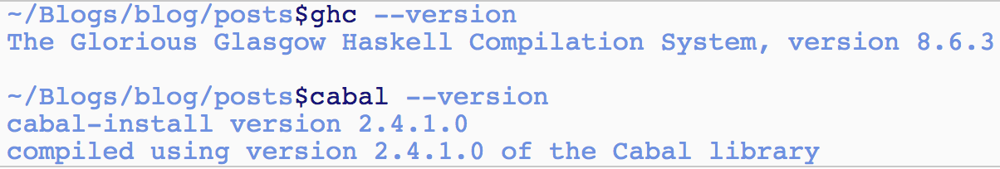
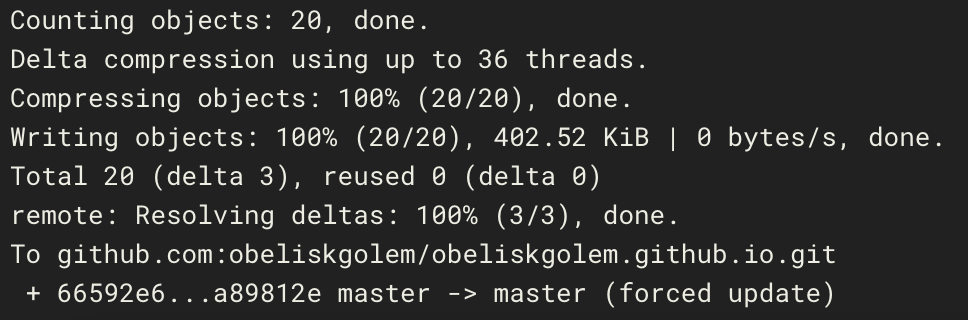
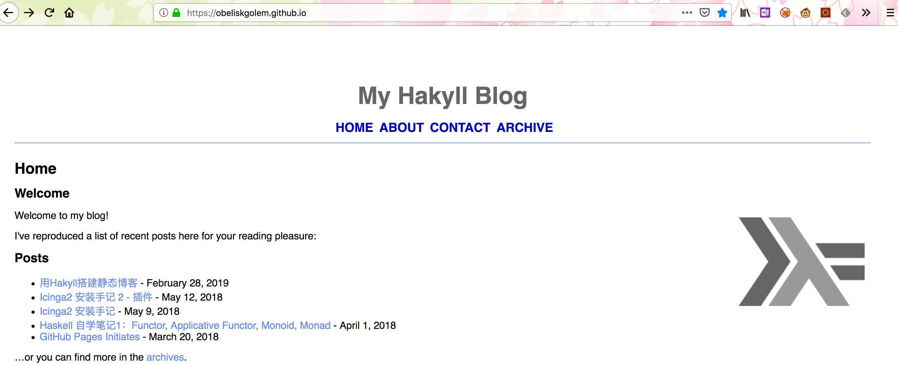

去年开始对Haskell感兴趣，惭愧的是后来有段时间较忙就把它放下了，这次决定重新学习一遍。没有什么比看书+动手更好的学习方式了，用Hakyll重新搭建github pages似乎是一个很好的起点，于是就开始吧。
Hakyll是一个静态的站点生成框架，written by Haskell，更多的信息可以参考 Hakyll Homepage1。
GHC/Cabal环境搭建
要使用Hakyll，首先必须在本机上配置好Haskell的编译环境。感谢万能的github，我找到了ghcup工具。比起Haskell官网的Haskell Platform来说，ghcup提供了更为简单明了的配置方式。（Haskell Platform as the default recommendation considered harmful）。
按ghcup的说明文档，首先通过脚本下载及编译ghc/cabal：
# complete bootstrap
curl https://raw.githubusercontent.com/haskell/ghcup/master/bootstrap-haskell -sSf | sh编译完成后，别忘了设置环境变量：
# prepare your environment
. "$HOME/.ghcup/env"
echo '. $HOME/.ghcup/env' >> "$HOME/.bashrc" # or similar设置好环境变量后就可以使用ghc/cabal了，我安装的版本是ghc 8.6.3/cabal 2.4.1。
~/Blogs/blog/posts$ghc --version
The Glorious Glasgow Haskell Compilation System, version 8.6.3
~/Blogs/blog/posts$cabal --version
cabal-install version 2.4.1.0
compiled using version 2.4.1.0 of the Cabal library配置中途出过一个问题，cabal编译所需要的内存太多。按stackoverflow上的方法，添加了一些swap space后解决。
安装及配置Hakyll
Hakyll的安装可以参考官网的教程，很简单：
之后用hakyll-init $sitedir就建好了一个简单的站点目录。
一些自定义配置
站点主题
我从 Hakyll CSS Garden2 中找了一个bronx主题，修改后替换了$sitedir/css目录下的default.css。不过这个主题挺简陋的，有空的话想把它美化一下。
代码语法高亮
博客中会出现一些代码，需要额外的css文件处理代码的语法高亮。以下是我参考jaspervdj（Hakyll作者）修改和pandoc default syntax style自己改的syntax.css。
div.sourceCode { overflow-x: auto; }
table.sourceCode, tr.sourceCode, td.lineNumbers, td.sourceCode {
margin: 0; padding: 0; vertical-align: baseline; border: none; }
table.sourceCode { width: 100%; line-height: 100%; }
td.lineNumbers { text-align: right; padding-right: 4px; padding-left: 4px; color: #aaaaaa; border-right: 1px solid #aaaaaa; }
td.sourceCode { padding-left: 5px; }
pre code {
display: block;
background-color: rgb(250,250,250);
padding-left: 4px;
padding-right: 4px;
}
code {
border: 1px solid rgb(200,200,200);
}
.sourceCode span.kw { color: #007020; font-weight: bold; } /* Keyword */
.sourceCode span.dt { color: #902000; } /* DataType */
.sourceCode span.dv { color: #40a070; } /* DecVal */
.sourceCode span.bn { color: #40a070; } /* BaseN */
.sourceCode span.fl { color: #40a070; } /* Float */
.sourceCode span.ch { color: #4070a0; } /* Char */
.sourceCode span.st { color: #4070a0; } /* String */
.sourceCode span.co { color: #60a0b0; font-style: italic; } /* Comment */
.sourceCode span.ot { color: #007020; } /* Other */
.sourceCode span.al { color: #ff0000; font-weight: bold; } /* Alert */
.sourceCode span.fu { color: #06287e; } /* Function */
.sourceCode span.er { color: #ff0000; font-weight: bold; } /* Error */
.sourceCode span.wa { color: #60a0b0; font-weight: bold; font-style: italic; } /* Warning */.sourceCode span.cn { color: #880000; } /* Constant */
.sourceCode span.sc { color: #4070a0; } /* SpecialChar */
.sourceCode span.vs { color: #4070a0; } /* VerbatimString */
.sourceCode span.ss { color: #bb6688; } /* SpecialString */
.sourceCode span.im { } /* Import */
.sourceCode span.va { color: #19177c; } /* Variable */
.sourceCode span.cf { color: #007020; font-weight: bold; } /* ControlFlow */
.sourceCode span.op { color: #666666; } /* Operator */
.sourceCode span.bu { } /* BuiltIn */
.sourceCode span.ex { } /* Extension */
.sourceCode span.pp { color: #bc7a00; } /* Preprocessor */
.sourceCode span.at { color: #7d9029; } /* Attribute */
.sourceCode span.do { color: #ba2121; font-style: italic; } /* Documentation */
.sourceCode span.an { color: #60a0b0; font-weight: bold; font-style: italic; } /* Annotation */
.sourceCode span.cv { color: #60a0b0; font-weight: bold; font-style: italic; } /* CommentVar */
.sourceCode span.in { color: #60a0b0; font-weight: bold; font-style: italic; } /* Information */把上面的部分加入到$sitedir/templates/default.html中。
Hakyll通过pandoc进行语法解析并打html tag，然后根据语法的css文件做高亮，但我感觉pandoc的解析总是有点问题。比如文章中这段：

高亮颜色就不对。只能以后自己慢慢调整了。
Hakyll与Docker, Github，CircleCI的集成
最后，我需要将站点与github pages同步，参考了 Dr. Hakyll: Create a GitHub page with Hakyll and CircleCI 3 以及 How to Hakyll CircleCI 2.0 4。
设置Github Pages项目
Github Pages只支持在master branch下的博客站点，而hakyll build后生成的静态站点文件都在$sitedir/_site目录下。文章中用的解决方法是建一个名为hakyll的分支，将本地的源文件推到该分支下。再通过CircleCI脚本编译后，将./_site目录推到master分支下。
$ mkdir username.github.io/
$ cd username.github.io/
$ git init
$ git commit --allow-empty -m "Create master branch"
$ git remote add origin git@github.com:username/username.github.io.git
$ git push -u origin master
$ git checkout --orphan hakyll
$ git submodule add git@github.com:username/username.github.io.git _site
$ git commit -m "Create hakyll branch"
$ git push -u origin hakyll创建自己的docker image
CircleCI可以对静态站点进行编译并将结果推送至github。然而编译之前需要安装ghc/cabal以及hakyll的库，这个过程会很费时间。因此在集成CircleCI之前，需要先建立一个自己的docker image，将编译所需要的库文件都放进去，节约CircleCI build的时间。
如何安装docker不赘述了，可以参考官方的文档Get Docker CE for Debian。用了一台debian的vps做这个事情。
docker安装好后，编写自己的Dockerfile拉取官方的docker image（我使用的是library/haskell），并加入hakyll库。这些步骤保存在Dockerfile里。
FROM haskell
RUN apt-get update && apt-get install -y ssh && apt-get install git
RUN cabal update
RUN cabal install hakyll -j1
WORKDIR /home按Dockerfile建立镜像：
最后将docker image推送到docker hub，供CircleCI拉取。
与CircleCI的集成
CircleCI与Github的集成也不过多赘述了，完成后编辑.circleci/config.yml文件，为CircleCI指定编译任务。
version: 2
jobs:
build:
docker:
- image: obeliskgolem/hakyll-cabal-image
steps:
# checkout the code in Github Pages project
- checkout
- run:
name: Generate Static Site
command: cabal run site build
- run:
name: Publish GitHub Pages
working_directory: './_site'
command: |
# initalize repo
git init
git config user.name 'obeliskgolem'
git config user.email 'obeliskgolem@circleci.com'
# add generated files
git add .
git commit -m "publish $CIRCLE_SHA1 [ci skip]"
# push to pages branch
git remote add origin "$CIRCLE_REPOSITORY_URL"
git push --force origin master最后，将本地的站点源代码推送至Github仓库的hakyll分支：
经CircleCI编译后，静态站点被输出到_site目录。

大功告成！

TODOs
- 加入草稿功能
- 加入评论功能
- 自动生成rss feed
- pandoc语法解析改进
参考文献，及一些可能有帮助的文档
Switching from Jekyll to Hakyll
https://thoughtbot.com/blog/easy-haskell-development-and-deployment-with-docker
Deploying a Hakyll website using Github Pages and CircleCI 2.0
Pandoc Syntax Highlighting with CSS description